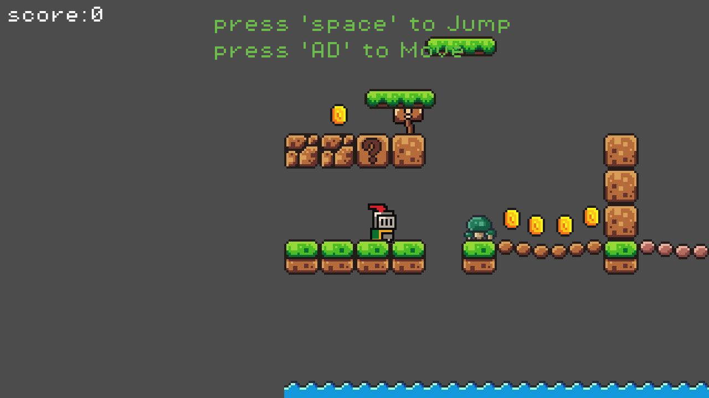
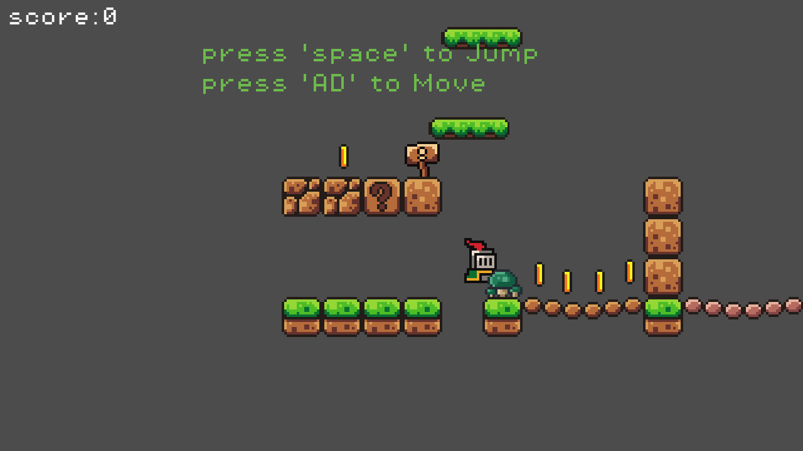
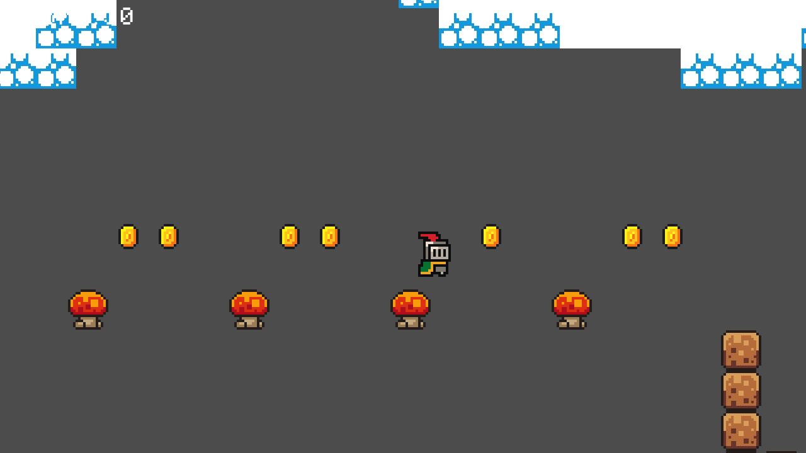
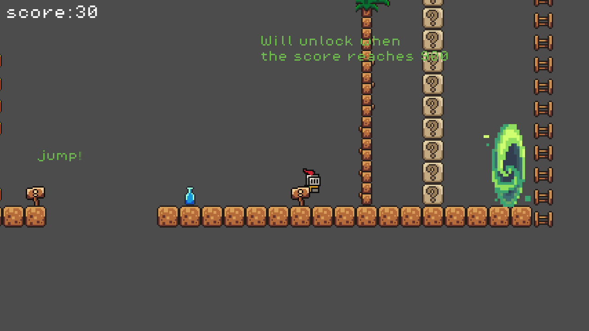
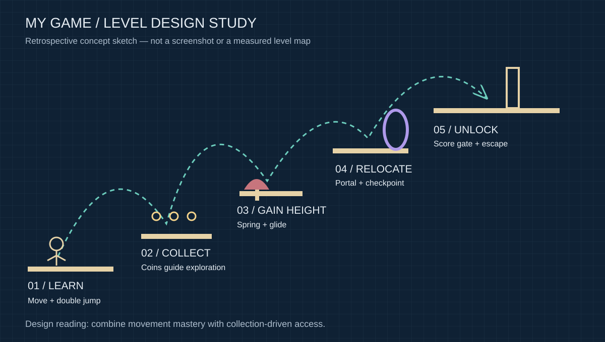
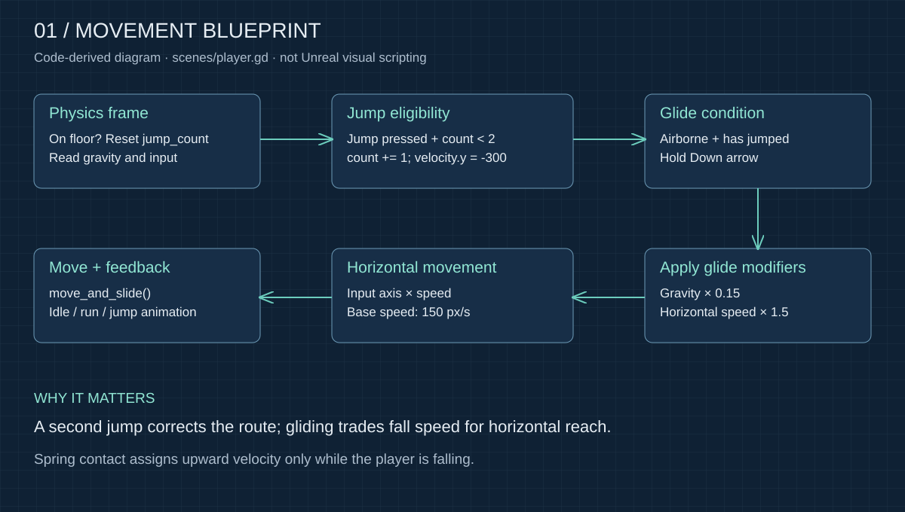
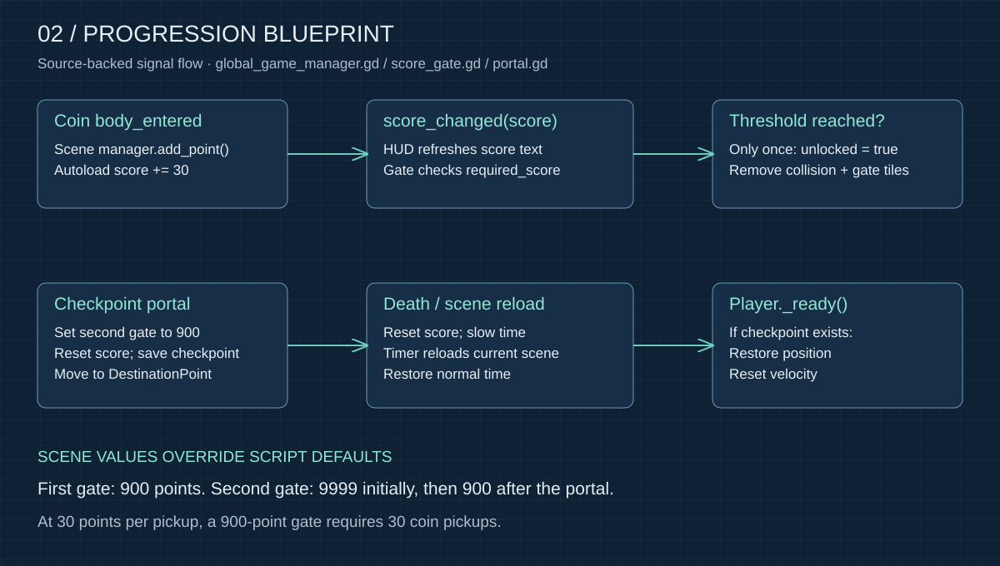

Movement vocabulary
A/D or Left/Right moves; Space jumps, up to twice before landing. Holding Down in the air after a jump enables glide. Mushroom springs set upward velocity only during a fall.
GODOT · GDSCRIPT · PLATFORMER
A 2D platformer prototype about gaining height, collecting access, and finding a way out.
The project retains its original working title, “My Game”. This case study reads the supplied Godot scenes and scripts to explain how its systems fit together.
IN-GAME CAPTURES
Captured directly from the project running in Godot 4.7.2. The opening and jump use normal game inputs; the spring and portal views use debug positioning, rather than a complete playthrough.




01 / DESIGN STUDY
A useful design interpretation is to connect movement challenges with collection-driven access: a second jump allows correction, gliding extends reach, and coins provide a reason to explore before a gate opens. This is a retrospective interpretation, not a claim about the project's original inspirations.

A/D or Left/Right moves; Space jumps, up to twice before landing. Holding Down in the air after a jump enables glide. Mushroom springs set upward velocity only during a fall.
Coin pickups add 30 points. The first score gate uses a 900-point threshold in the scene. A checkpoint portal resets the score, stores a respawn position, and changes the second gate's threshold to 900.
02 / PROGRAMMING LOGIC
This is a Godot GDScript project. The following “blueprints” are explanatory logic diagrams reconstructed from code, not Unreal Engine Blueprint graphs or original editor screenshots.

The controller uses a base speed of 150, jump velocity of −300, glide gravity scale of 0.15 and a 1.5× horizontal boost. Landing resets the jump counter. These values are taken directly from player.gd.

GameManager is an autoload singleton. Its score setter emits score_changed, which the HUD and gates subscribe to. Gate opening removes both the generated collision body and the corresponding TileMap cells. Slimes use left/right RayCast2D hits to reverse patrol direction at speed 60.
03 / SCENE ARCHITECTURE
Autoload ├── GameManager → score_changed / score / checkpoint └── Music scenes/game.tscn ├── Player (CharacterBody2D) → player.gd │ └── Camera2D2 ├── TileMap → terrain and gate cells ├── GameManager (CanvasLayer) → score UI / end message ├── AutoUnlockGate / AutoUnlockGate2 → score_gate.gd ├── Node2(Slime) → slime instances / RayCast2D patrol ├── Node2 → Mushroom_Spring instances ├── Node3 → portal instances / destination markers └── EndGoal (Area2D) → end_goal.gd
The CanvasLayer called GameManager is the scene's UI manager; it delegates scoring to the separate autoload GameManager. The two similarly named nodes have different responsibilities.
04 / CODE EVIDENCE
func add_point(amount: int = 30) -> void:
score += amountfunc check_unlock() -> void:
if unlocked or GameManager.score < required_score:
return
unlock_gate()
func unlock_gate() -> void:
unlocked = true
remove_gate_collision()
var start_y: int = mini(gate_y_start, gate_y_end)
var end_y: int = maxi(gate_y_start, gate_y_end)
for y in range(start_y, end_y + 1):
tile_map.erase_cell(gate_layer, Vector2i(gate_x, y))func _on_body_entered(body: Node2D) -> void:
if body.is_in_group("player"):
print("2")
var gate2 = get_tree().current_scene.get_node("AutoUnlockGate2")
gate2.required_score = 900
print("portal reset score")
GameManager.reset_score()
GameManager.set_checkpoint(Vector2(1496, -1256))
body.global_position = $DestinationPoint.global_positionAdditional scripts: player.gd · slime.gd · mushroom_spring.gd
05 / PROTOTYPE NOTES
Documentation is based on source inspection. The project was run in Godot 4.7.2 to capture the images above; no playable web build is provided. No historical sketches or verified asset-license document were found in the supplied folder. Diagrams and page copy were prepared with AI assistance; original gameplay authorship and asset provenance are not inferred.
GODOT · GDSCRIPT · PLATFORMER
一个围绕攀升、收集解锁与寻找出口展开的 2D 平台跳跃原型。
沿用工程中的原始工作名称“My Game”。本展示根据提供的 Godot 场景与脚本，梳理游戏机制及其实现。
IN-GAME CAPTURES
以下图片直接截取自 Godot 4.7.2 运行画面。起点与跳跃图使用正常游戏输入；蘑菇和传送门区域通过调试定位取景，不代表完整通关记录。
01 / DESIGN STUDY
可以将现有机制理解为“移动挑战 + 收集解锁”：二段跳提供修正机会，滑翔扩大横向可达范围，金币则鼓励玩家在开门前探索。这是基于现有实现的设计解读，不代表作者最初的灵感来源。
A/D 或左右方向键移动；空格跳跃，落地前最多跳两次。起跳后在空中按住下方向键可滑翔。蘑菇弹簧仅在角色下落时施加向上的速度。
拾取金币增加 30 分；场景中的第一道分数门需要 900 分。检查点传送门会清空分数、保存复活位置，并将第二道门的要求调整到 900 分。
02 / PROGRAMMING LOGIC
这是使用 GDScript 的 Godot 项目。下方“蓝图”是根据代码重新整理的逻辑示意图，并非 Unreal Engine Blueprint，也不是原始编辑器截图。
角色基础速度为 150，跳跃速度为 −300；滑翔重力倍率为 0.15，水平速度倍率为 1.5。落地会重置跳跃次数。这些数值直接来自 player.gd。
GameManager 是自动加载单例。分数 setter 发出 score_changed 信号，界面和分数门监听该信号；开门时同时删除生成的碰撞体和对应 TileMap 格子。史莱姆通过左右 RayCast2D 碰撞检测改变巡逻方向，速度为 60。
03 / SCENE ARCHITECTURE
Autoload ├── GameManager → score_changed / score / checkpoint └── Music scenes/game.tscn ├── Player (CharacterBody2D) → player.gd │ └── Camera2D2 ├── TileMap → terrain and gate cells ├── GameManager (CanvasLayer) → score UI / end message ├── AutoUnlockGate / AutoUnlockGate2 → score_gate.gd ├── Node2(Slime) → slime instances / RayCast2D patrol ├── Node2 → Mushroom_Spring instances ├── Node3 → portal instances / destination markers └── EndGoal (Area2D) → end_goal.gd
场景内名为 GameManager 的 CanvasLayer 负责界面，并把加分交给独立的自动加载 GameManager。两者名称相似，但职责不同。
04 / CODE EVIDENCE
func add_point(amount: int = 30) -> void:
score += amountfunc check_unlock() -> void:
if unlocked or GameManager.score < required_score:
return
unlock_gate()
func unlock_gate() -> void:
unlocked = true
remove_gate_collision()
var start_y: int = mini(gate_y_start, gate_y_end)
var end_y: int = maxi(gate_y_start, gate_y_end)
for y in range(start_y, end_y + 1):
tile_map.erase_cell(gate_layer, Vector2i(gate_x, y))func _on_body_entered(body: Node2D) -> void:
if body.is_in_group("player"):
print("2")
var gate2 = get_tree().current_scene.get_node("AutoUnlockGate2")
gate2.required_score = 900
print("portal reset score")
GameManager.reset_score()
GameManager.set_checkpoint(Vector2(1496, -1256))
body.global_position = $DestinationPoint.global_position更多脚本： player.gd · slime.gd · mushroom_spring.gd
05 / PROTOTYPE NOTES
本页依据源码检查整理。已使用 Godot 4.7.2 运行项目并截取上方图片；本页尚未提供可玩的网页版。提供的文件夹中未找到历史草图或可核实的素材授权文档。图解与页面文案使用 AI 辅助整理，不据此推断原游戏各部分的作者或素材来源。